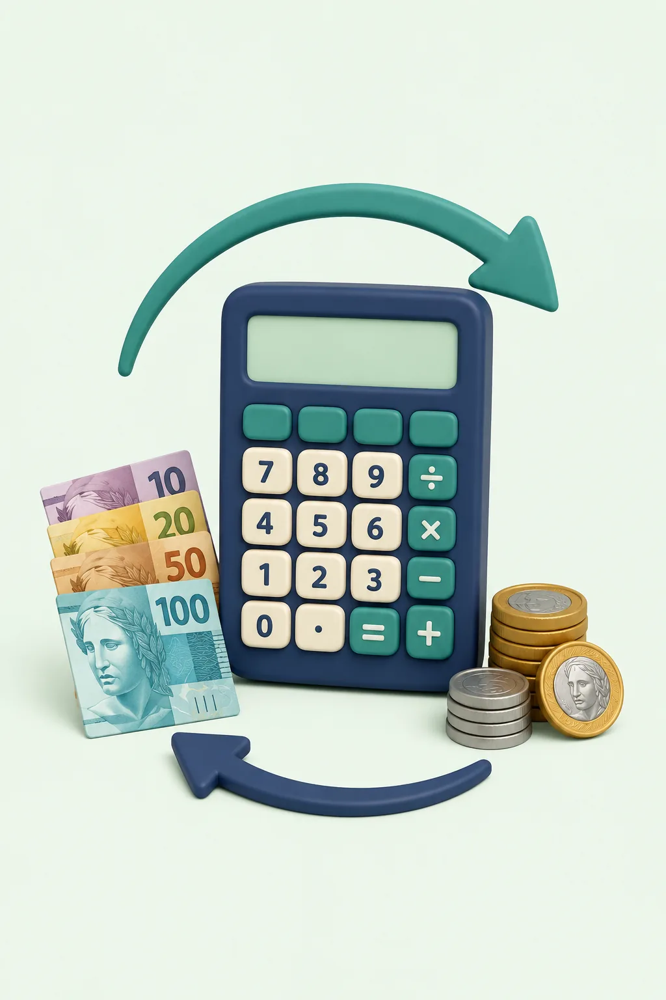

FERRAMENTA GRATUITA
Conversor de moedas
Converta valores entre real, dólar, euro, libra e outras moedas e simule uma taxa adicional.

Resultado
Cotação utilizada—
Valor convertido—
Taxa adicional—
Total com taxa—
Como converter moedas online
Use o conversor para calcular valores entre real, dólar, euro, libra e outras moedas disponíveis. A ferramenta é útil para viagens, compras internacionais, comparação de preços e planejamento de despesas.
Como usar
Digite o valor, escolha a moeda de origem e a moeda de destino. Se quiser aproximar o custo cobrado pela sua instituição, abra a opção de taxa adicional e informe o percentual.
Como funciona a conversão
O valor é convertido com base na cotação de referência disponível para as moedas selecionadas. Se houver uma taxa adicional, ela é aplicada separadamente para mostrar uma estimativa do total.
Exemplo prático
Se 1 dólar estivesse cotado a R$ 5,00, US$ 100 corresponderiam a R$ 500 antes de taxas. Esse exemplo é apenas ilustrativo: use a cotação exibida pela ferramenta no momento da consulta.
Dúvidas frequentes
A cotação é igual à do meu banco ou cartão?
Não necessariamente. Bancos, cartões, casas de câmbio e plataformas podem usar cotações, spreads, impostos e tarifas próprios.
O que é spread cambial?
É uma diferença ou acréscimo aplicado pela instituição sobre a taxa de câmbio de referência. A ferramenta permite simular um percentual adicional quando você souber esse valor.
Observações importantes
O resultado é informativo e não substitui a cotação final apresentada pela instituição financeira no momento da operação. Para outros cálculos, use também a calculadora de porcentagem, a calculadora de combustível ou a calculadora de juros compostos.